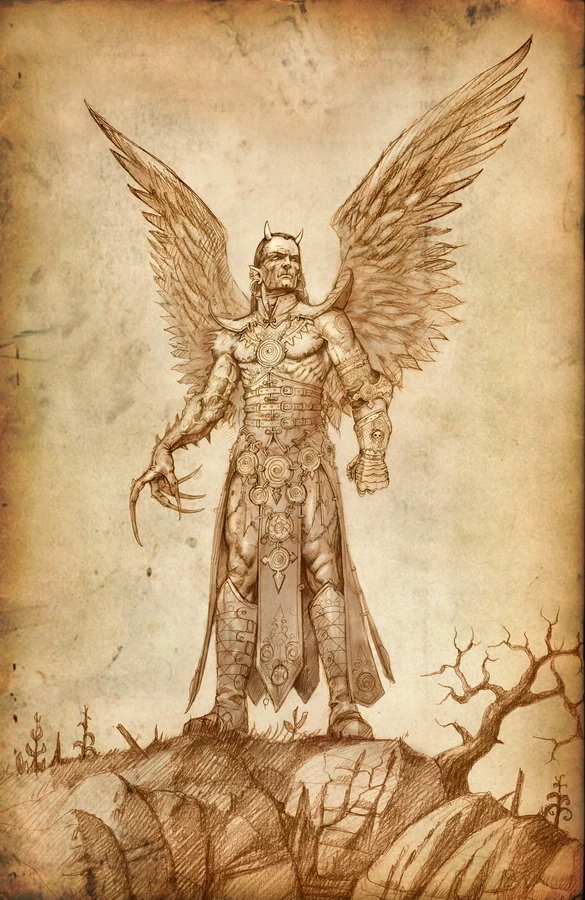
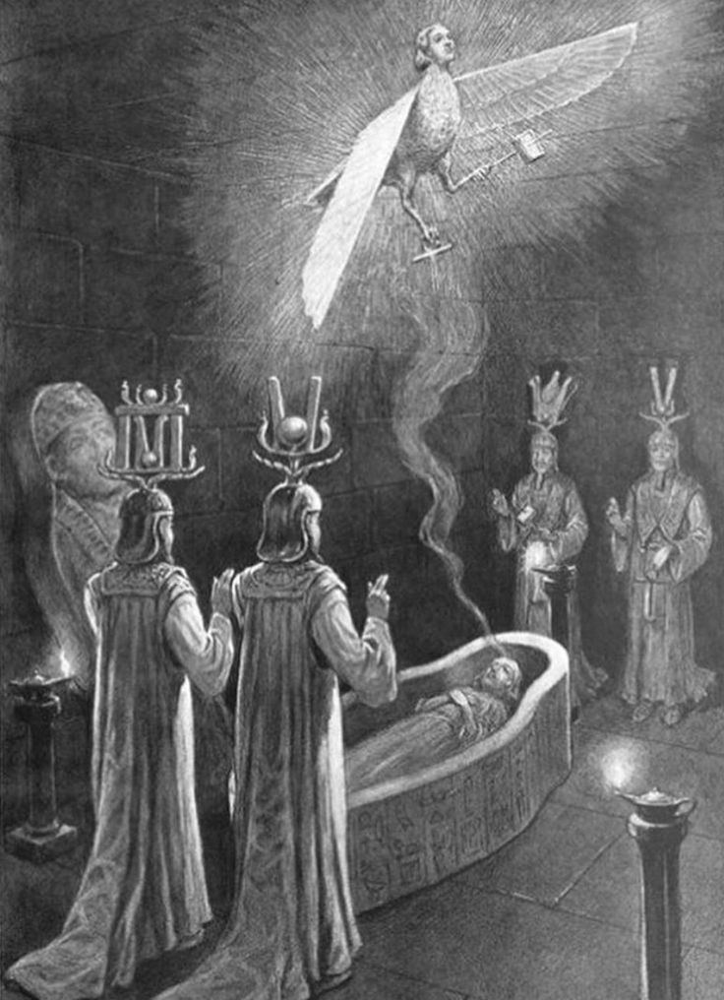

Belial
Entre los nombres más antiguos asociados con la corrupción y la rebeldía se encuentra Belial.
Su figura aparece tanto en textos bíblicos como en la tradición demonológica posterior, y en la Ars Goetia es descrito como uno de los reyes más poderosos del Infierno, gobernando numerosas legiones.
Pero Belial no es un simple espíritu de violencia.
Es el señor de la independencia absoluta.
El patrón de la ley quebrantada.
La voz que susurra que nadie debe obedecer.

El nombre Belial ha sido asociado con “inutilidad” o “perversidad”, pero su esencia es más compleja. Representa la ruptura del orden establecido, la negación de la autoridad y el rechazo de cualquier estructura moral impuesta.
No destruye por furia.
Destruye por desafío.
Donde hay jerarquía, Belial siembra orgullo.
Donde hay reglas, siembra duda.
Donde hay obediencia, siembra ambición.
apariencia
En los grimorios se le describe como una figura de gran belleza, de porte noble y voz elocuente. No se presenta como una bestia grotesca, sino como un rey elegante, vestido con ornamentos reales y una presencia imponente.
Esa es su fuerza.
Belial no seduce con miedo.
Seduce con poder.
Se manifiesta como un gobernante que ofrece libertad absoluta, independencia total… a cambio de lealtad.
Su dominio
Belial es invocado en busca de influencia, poder político, dominio social y ventaja sobre rivales.
Se le atribuye la capacidad de otorgar cargos, favorecer ascensos y manipular estructuras de poder. Es un estratega del prestigio y la posición.
Pero su ayuda tiene una condición implícita: orgullo.
Quien camina bajo su influencia puede volverse arrogante, impulsivo, convencido de estar por encima de toda norma.
Belial no guía hacia la armonía.
Guía hacia la supremacía.
Pactos e invocacion
En la tradición goética, su invocación exige ofrendas y una preparación rigurosa. Los textos advierten que no responde bien a la debilidad ni a la indecisión.
Debe ser tratado con respeto formal, como a un rey.
Algunas tradiciones indican que no concede favores si no se le presentan ofrendas apropiadas, y que desprecia la falta de seriedad en quien lo invoca. Se dice que exige determinación y convicción absoluta.
Belial no sirve a los inseguros.

La ira de un demonio
Si alguien rompe un pacto o invoca su nombre sin preparación, su influencia puede tornarse destructiva.
Orgullo desmedido.
Conflictos innecesarios.
Caídas públicas.
Escándalos y pérdida de estatus.
Belial eleva… pero también deja caer.
Su enseñanza es clara: quien busca poder sin control termina consumido por él.
Belial encarna la rebeldía primigenia: la negativa a inclinarse ante cualquier trono.
Es la promesa de independencia total, pero también la advertencia de que la libertad sin límites puede convertirse en tiranía.
Quien escucha su llamado puede sentir una confianza creciente, una seguridad que roza la soberbia.
Y cuando esa sensación aparece…
cuando las reglas comienzan a parecer innecesarias…
cuando la autoridad ya no parece digna de respeto…
Tal vez no sea solo ambición.
Tal vez sea la sombra de un rey antiguo, recordándote que nadie nace para obedecer.